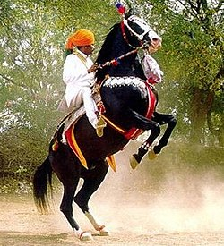
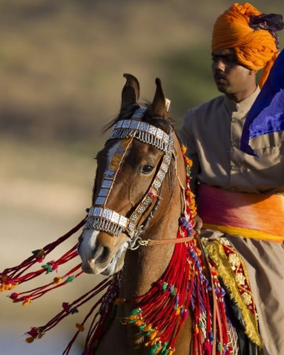
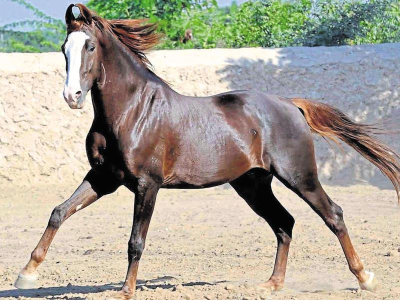
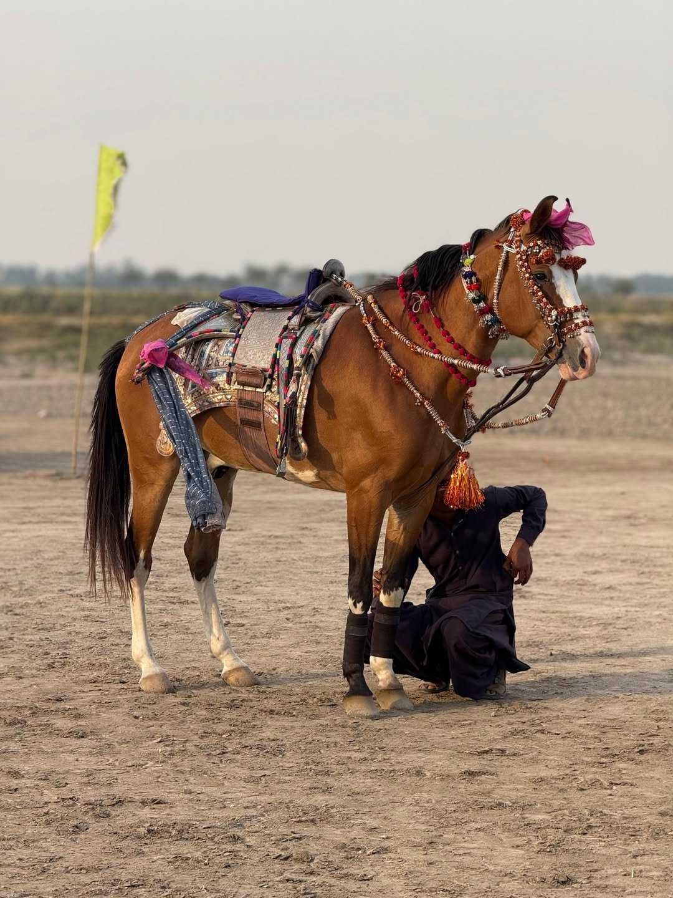
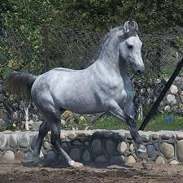
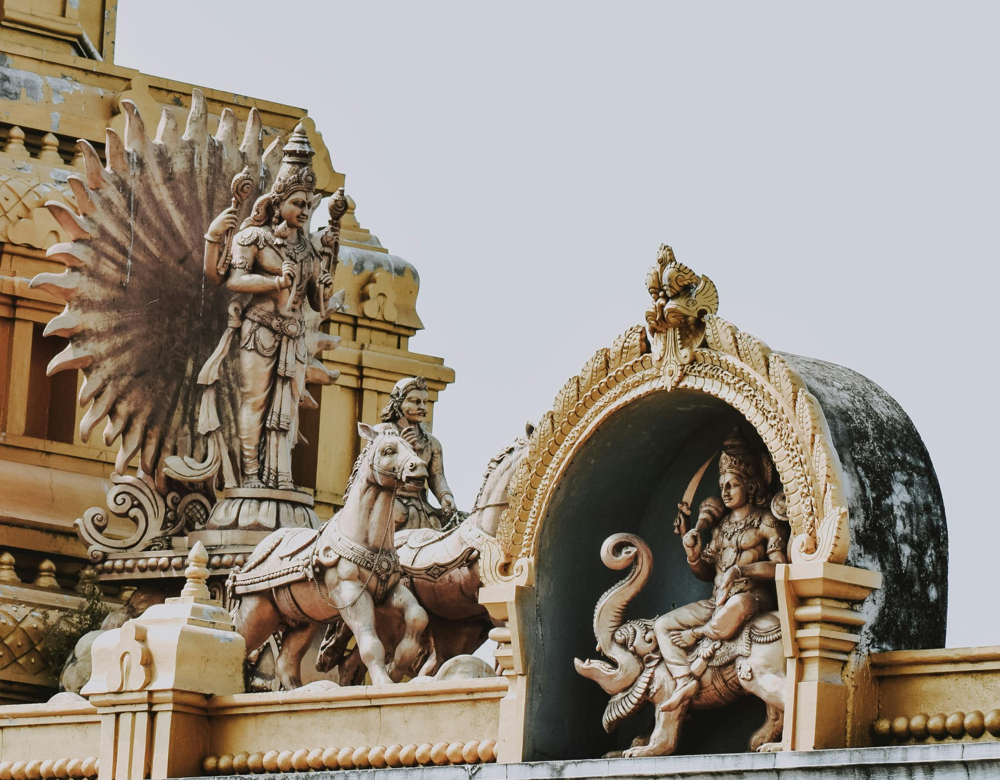

The Marwari: Built for the Desert, Bred for Loyalty
The Marwari horse stands out for one obvious reason: its ears. Those signature inward-curving tips, often touching at the top, are unlike any other breed in the world — and they announce the horse before anything else does. But spend any time with the Marwari, and you quickly understand that the ears are the least of what makes it remarkable. This is a horse shaped by one of the harshest environments on earth, by centuries of warfare, and by a tradition of loyalty that runs deeper than any physical trait.
If you’re interested in horses bred for tough conditions and deep loyalty, the Marwari is worth knowing.

History: Bred for War, Built to Last
The Marwari was developed by the Rathore warriors in what is now Rajasthan. These horses were expected to be reliable under pressure — brave enough to face combat and smart enough to find their way home if the rider didn’t make it. Stories of Marwaris returning fallen warriors from the battlefield are woven into Rajasthani folklore, and for good reason: the breed’s loyalty and desert-adapted instincts are genuinely exceptional.
During British rule, the breed fell out of favour and nearly disappeared. Colonial administrators preferred imported European horses, and the Marwari was sidelined. Thanks to a few dedicated breeders and local custodians, it survived — and is now making a quiet, determined comeback.

Physical Traits: Made for Tough Country
The Marwari typically stands between 14 and 15 hands high (approximately 142–152 cm), though some individuals reach up to 16 hands. They have a lean, athletic build with an arched neck, deep chest, long back, sloping croup, and small but durable hooves suited for hard ground.
The most recognisable feature is, of course, those inward-curving ears, which often touch at the tips. But equally notable is the breed’s natural ambling gait, called the rehwal, which provides a smooth, energy-efficient ride over distance — particularly useful for long desert travel. Coat colours vary widely, including bay, grey, chestnut, palomino, and occasionally piebald or skewbald. Grey horses are considered especially auspicious in Rajasthani tradition.

Marwari — At a Glance
- Height: 14–15 hands (142–152 cm); some reach 16 hh
- Origin: Rajasthan, India — developed by the Rathore warrior clan
- Distinctive trait: Inward-curving ears that often touch at the tips
- Natural gait: The rehwal — a smooth ambling gait suited to distance riding
- Colours: Bay, grey, chestnut, palomino, piebald, skewbald; grey considered auspicious
- Temperament: Brave, loyal, intelligent, and highly responsive
- Export status: Restricted — not widely available outside India
- Current use: Heritage riding, ceremonial parades, tourism, conservation breeding
Tack and Riding Style
Traditional Marwari tack is simple, practical, and adapted to long rides in open terrain. The saddle most associated with the breed is the Sawar (or Sowar) saddle — originally a cavalry design, lightweight and built for comfort and endurance. It is typically used with a basic pad and girth system.
Bridles are often English-style in modern use, especially for trekking and tourism. In ceremonial settings, tack may include decorative cloths, silver accents, and locally crafted leatherwork. A standing martingale is sometimes paired with a neck strap made from traditional cloth pugaree. While some riders have adopted Western gear for convenience, there is a growing effort to retain traditional fittings, especially in heritage-focused stables.

Current Status: Holding Their Ground
Marwaris aren’t widely known outside India, partly due to export restrictions that have historically limited international breeding. But within India — especially in Rajasthan — the breed is gaining serious interest again. Heritage stables in Jodhpur and Udaipur offer guided rides and breed education. Conservation groups are working to protect bloodlines and promote responsible breeding practices.
“These horses weren’t bred for fashion or fads. They were built for function, in one of the harshest climates on earth.”

Final Thoughts
What stands out about the Marwari is its balance of practicality and tradition. This is not a horse bred for the showring or the racetrack. It was shaped by the desert, by war, and by generations of people who depended on it absolutely. That history is present in every aspect of the horse — in the way it moves, in its temperament, in the way it reads its rider.
For anyone interested in working horses with strong regional identity, the Marwari is worth far more than a look. It is a reminder that some of the world’s most extraordinary horses are still found not in international competition, but in the places that made them — tied to land, culture, and centuries of earned trust.

Related Stories

Pushkar Horse & Camel Fair: A Sacred Stage for India’s Marwari Majesty
Every November in Rajasthan, the Pushkar Mela transforms a Hindu pilgrimage into one of the world’s most colourful livestock festivals — and a rare window into India’s equestrian culture.

The Horses of the Camargue
Tough, white, and semi-feral, the Camargue horse is a living part of southern France’s wetland culture. This article explores the breed’s origins, traits, and working life with the Gardians.

Lords of the Southern Plains: The Rise and Fall of the Comanche Horse Nation
For the Comanche, the horse was not a means of travel but the foundation of warfare, survival, and an empire that reshaped the balance of power across a continent.